Diffraktion
När ljus passerar genom en öppning av något slag sprids det. Den vinkel det sprids med blir större ju mindre öppningen är.
Allmännt kan sägas att spridningen i vinkel ges av
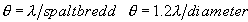för en spalt och en cirkulär öppning respektive. Detta ger spridningen på stort avstånd från öppningen men också i fokus till en lins (eller ett linssystem).
Radien på bilden av en punktkälla (stjärna) avbildad i en lins med fokallängd f och diameter D blir alltså
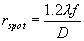
För ett öga med fokallängd 20mm och pupilldiameter 3mm blir alltså fläcken på näthinnan 4µm i radie. Detta motsvarar ungefär avståndet mellan stavar och tappar i ögats mest känsliga delar. Naturen/Gud/Darwin
(stryk de som ej önskas) har alltså inte haft anledning att utveckla bättre näthinna eftersom finare detaljer än så aldrig kan avbildas på näthinnan.Sambandet ovan gäller för all elektromagnetisk strålning dvs även närm man vill samla ihop "TV-vågor" från en satellit. Antag en parabol med diameter 400mm och fokallängd 400mm. Frekvensen är 12GHz vilket ger en våglängd på 25mm. Vi får då en spot med radie 30mm. Ungefär så noga behöver man vara vid utplacering av mikrovågshuvudet.
Diffraktion nivå 2
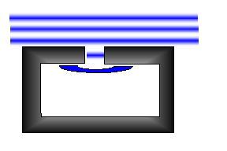För att förstå orsaken till diffraktion kan lite historia vara bra. Fenomenet beskrevs första gången av holländaren Huygens (han med okularet) som studerade havsvågor in i Rotterdams hamn. Vågorna gick in genom en liten öppning som i fig, men fortsatte inte rakt fram och slog i motsvarande kajkant med full kraft, utan bredde ut sig, och förlorade därmed i våghöjd. Man skulle kunna säga att det hela beror på att naturen inte tillåter diskontinuiteter (som att en 1m hög våg skulle sluta plötsligt i sidledd och att vattnet därutanför skulle vara kav lugnt)
Om vi återgår till ljus så är det en våg som består av ett elektriskt fält. Som sådant "vill" det egentligen breda ut sig åt alla håll (jfr fältet från en laddning, det är ju lika i alla riktningar). Att ljus överhuvudtaget får en riktning beror på dess vågnatur.
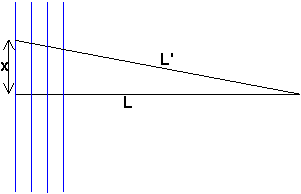För att förstå hur kan vi titta på vågor som rör sig i en given riktning (de blå vågfronterna i fig). Då frågar vi oss (visst gör vi det??) vilka delar av vågfronten som bidrar till en given punkt längst till höger. Alla punkter som ligger utefter den linje som är vinkelrät mot vågfronterna är förståss i fas.
Men ju större x vi väljer dest mer ur fas ligger de och för större x kommer de omväxlande att ligga ur fas och i fas dvs ta ut varandra. Man kan
visa att den del som ligger i fas ges av att 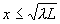. Denna del av en vågfront brukar kallas den första fresnelzonen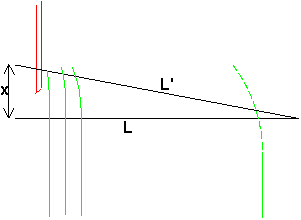Om vi nu för in ett hinder
(det röda rakbladet i fig) i vågorna kommer detta att påtagligt påverka ljuset i vår punkt rakt fram när bladet kommer in i första fresnelzonen. Precis som i fallet med havsvågorna kommer ljuset att böja av så att en del av vågfrpnten blir krökt. Detta i sin tur medför att intensiteten i vår punkt succesivt kommer att minska när rakbladet passerar. Observer att intensiteten inte blir noll då rakbladet har psserat den räta linjen utan strax efter (när det försvinner ut ur första fresnelzonen nedåt)Denna typ av diffraktion (Fresneldiffraktion) blir som synes (?) oväsentlig på stora avstånd (mycket större än spaltöppningen). På långt håll har vi i stället Fraunhoferdiffraktion som har samma orsak men lite annorlunda resultat. Innan vi tittar på det ska vi bara konstatera att oändligheten kan ligga mycket närmre än man tror. Var ligger den i en kikare till exempel?
Jo…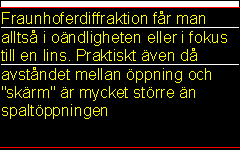 Matematisk beskrivning av fresnel och fraunhofer i allmännhetI denna typ av diffraktion får vi alltså spridning i en given vinkel som beror av (enbart) kvoten mellan våglängd och öppningens (linsens) storlek. Uttrycken ovan på nivå 1 är approximationer av
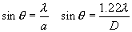
vilket är uttryck för vinklar till första minimum i spalt (
härledning) respektive cirkulär öppning, inom vilka huvuddelen av ljuset hamnar.Vågfronterna beter sig i det fallet som i fig nedan
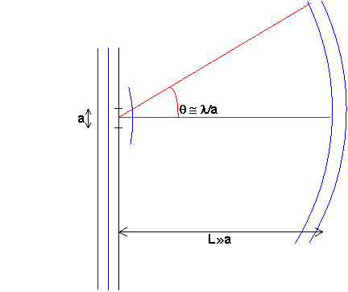
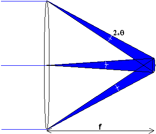Övergången från fraunhofer till fresneldiffraction kan man se genom att köra en liten
matlabsnutt. Man börjar då med en spalt som är mycket smal (de röda markeringarna i den plot som kommer upp. För varje steg blir sedan spalten bredare vilket gör att det blir ett sämre och sämre antagande att möstret studeras i oändligheten. Så småningom börjar fördelningen mer och mer likna det som är geometrisk optik, dvs en belyst strimma och skugga däromkring.Om vi vill studera mer i detalj vad som händer när ljuset går genom en lins, kan vi studera vår välbekanta stjärna blå. Enligt geometrisk optik samlas ljuset mot fokus till linsen, men pga av diffraktion sprids den i en vinkel 2
q, vilket ger en spot med radien qf
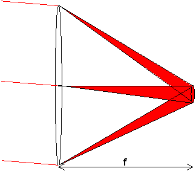
Nu tar vi stjärna röd och låter den komma in snett uppifrån, en vinkel
a. Det blir då en lika stor spot, förskjuten en sträcka af neråt.
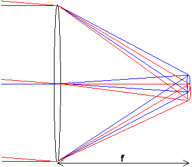
Om vi nu tittar på bägge stjärnor samtidigt frågar vi oss hur stort
a måste vara för att stjärna röd och stjärna blå ska vara särskiljbara (=upplösta). Lord Rayleigh iförde (det tämligen godtyckliga kriteriet att fläckarnas mittpunkter ska ligga åtskiljda med en fläckradie (dvs periferin på den ena ska ligga i centrum på den andra). Som vi ser ger detta att den minsta upplösbara vinkeln=a=q.I fallet med ett dagsljusseende öga med diameter på pupillen 2mm blir detta en vinkel på 0.3mrad dvs på 3m är det absolut bästa man kan se mm-strecken på en linjal.
Man också visa att i ett sammansatt system ges diffraktionen av
utträdespupillen
Till
nästa nivå-2-sida (Skärpedjup)Det finns inga fler nivå-1 sidor i detta kapitel
Till
nästa kapitel (Laser och laserteknik)Till
innehållsförteckningen